Introducción
Las hojas de estilo o CSS son un estandar de la W3C para aplicar distintos estilos, formatos y caracteristicas a los documentos como HTML.
En la practica son ficheros de texto en los que se van definiendo propiedades concretas para los elementos de una página. Esto ahorra espacio y trabajo en el desarrollo de la misma.
Inserción de estilos "STYLE"
Ademas de añadir estilos desde CSS, también podemos hacerlo desde HTML.
Hoy en dia esta técnica esta casi obsoleta, ya que sobre carga el código HTML dificultando su lectura.
Para llevar acabo esta practica usaremos la etiqueta style, la podemos usar como atributo a cualquier elemento o en el head de nuestra página para añadir los estilos.
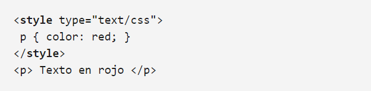
Hojas de estilo externas "LINK"
Esta técnica es la más usada, ya que es conveniente usar una hoja de estilos definida externamente al HTML, para enlazarla con este, usaremos la etiqueta link, esta la definiremos en el head de nuesta página.
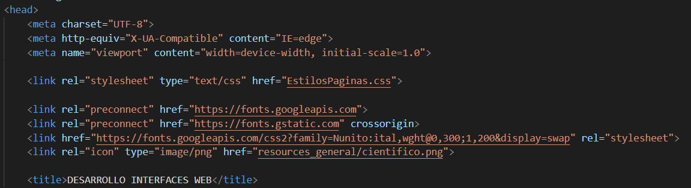
Clasede estilos y atributo class
Cuando queremos aplicar estilos diferentes a distintos parrafos, podemos usar en los elementos HTML el atributo class, Con esto establecemos una clase a ese elemento.
Para poder dar uso en CSS a estas clases dentro de documento CSS debemos usar un punto delante el nombre que le hayamos puesto en el elemento a la clase.
En la partica el resultado seria este:
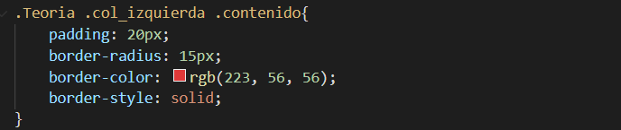
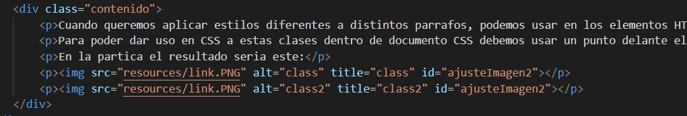
Identificador de estilos y atributo ID
Cada elemento en nuestra pagina web, podemos identificarlo con un id, un ejemplo practico es cuando tenemos varios parrafos y queremos darle un estilo concreto a alguno de ellos.
Para usamos el atributo id, en CSS lo utilizaremos con una # seguido del nombre de esa id para darle estilos.
En la partica el resultado seria este:
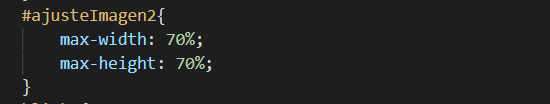
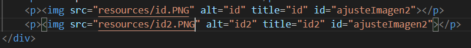
Pseudo-Clases
Las Pseudo-Clases van un poco más allá de los estilos y permiten controlar elementos circunstanciales de la pagina HTML.
Las palabras :hover, :visited, :link, :active son pseudoclases que se pueden añadir a los estilos para controlar esas circunstancias.
Encontramos varios tipos de estas Pseudoclases.
Pseudo-Clases Dinámicas
Estas pseudo-clases se utilizan para controlar ciertas circunstancias, como por ejemplo aclarar que un enlace ya se ha visitado en la página o que esté inactivo o incluso dar estilo a un elemento cuanto el puntero del ratón se sitúe encima del elemento.
Aparte de lo nombrado anteriormente existen otros tipos de elementos:
- :link → link no visitado
- :visited → link visitado
- :active → representa el elemento que el usuario está activando. Cuando se usa el ratón, la activación, generalmente comienza cuando el usuario presiona el botón primario y termina cuando se suelta. Se usa normalmente con a y button.
- :hover → al poner el ratón sobre el elemento.
- :focus → cuando el elemento recibe el foco.
Un ejemplo:
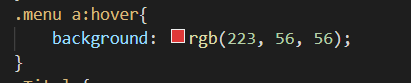
Pseudo-Clases de Estado
Como su propio nombre indica, estas se usan para remarcar el estado de un elemento de formulario, como por ejemplo si el elemento está desactivado o activado.
Además, hay otros tipos como:
- :enabled → se aplica a todos los campos del formulario que estén activados.
- :disabled → para los desactivados. Para desactivarlos hay que aplicar específicamente DISABLED.
- :checked → representa cualquier radio, checkbox u option que está marcado o conmutado a un estado on.
- :in-range → representa un elemento input cuyo valor actual se encuentra dentro de los límites de rango especificados por los atributos min y max.
- :out-of-range → fuera de los límites de rango.
- :required → representa cualquier elemento input, select o textarea que tenga el atributo required establecido en él.
- :optional → representa cualquier elemento input, select o textareaque NO tenga el atributo required establecido en él.
- :valid → representa cualquier elemento o del formulario cuyo contenido se valide satisfactoriamente. Esto permite que los campos válidos adopten fácilmente una apariencia que ayuda al usuario a confirmar que sus datos están formateados correctamente.
- :invalid → representa cualquier elemento u otro elemento cuyos contenidos no se puedan validar.
- :read-only → para campos de solo lectura.
- :read-write → para campos de lectura y escritura que son la mayoría.
Un ejemplo:
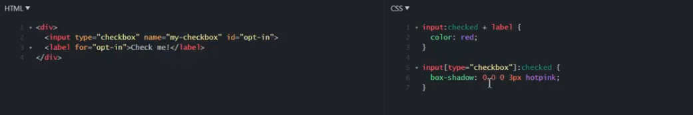
Pseudo-Clases de Estructura
Para este apartado tenemos dos tipos:
- :root → selecciona el elemento raíz de un árbol que representa el documento. En HTML, :root representa el elemento y es idéntico al selector html, excepto que su especificidad es mayor.
- :empty → representa cualquier elemento que no tenga hijos. Los hijos pueden ser nodos de elemento o texto (incluido el espacio en blanco). Los comentarios o las instrucciones de procesamiento no afectan si un elemento se considera vacío.
Un ejemplo:
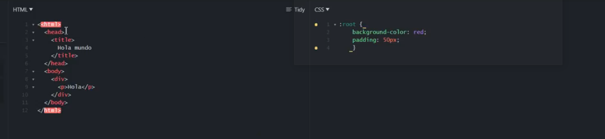
Pseudo-Clases de Child
Controlan los elementos hijos de un elemento padre html. Tenemos varios tipos:
- :first-child → representa el primer elemento entre un grupo de elementos hermanos.
- :last-child → representa el último elemento entre un grupo de elementos hermanos.
- :nth-child(n) → selecciona al hijo n (independientemente del tipo de etiqueta).
- :nth-last-child(n) → selecciona el hijo n empezando a contar desde el final.
- :only-child → representa un elemento sin hermanos.
Un ejemplo:
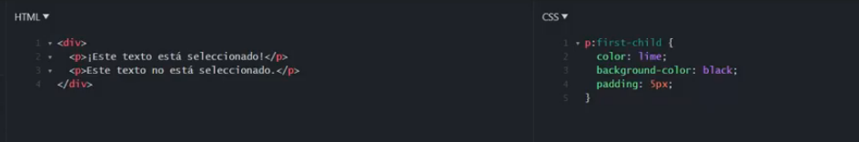
Pseudo-Clases de Type
Se utiliza cuando tenemos que seleccionar un elemento y tiene que ser con la etiqueta que digamos.
Tenemos varios tipos:
- :first-of-type → representa el primer elemento de su tipo entre un grupo de elementos hermanos.
- :last-of-type → último.
- :nth-of-type(n) → selecciona uno o más elementos de un tipo dado, en función de su posición entre un grupo de hermanos.
- :nth-last-of-type(n) → coincide con uno o más elementos de un tipo dado, en función de su posición entre un grupo de hermanos, contando desde el final.
- :only-of-type → representa un elemento que no tiene hermanos del mismo tipo.
Un ejemplo:
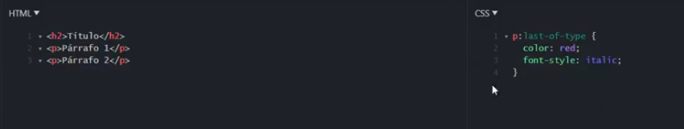
Pseudo-Clases de navegación
Encontramos un solo tipo:
- :not → selecciona un elemento que no cumpla la condición, se puede poner cualquier selector salvo otro :not.
Un ejemplo:
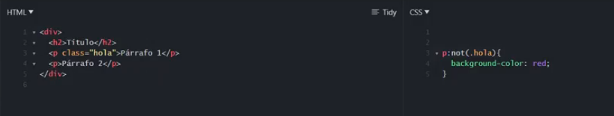
Selectores de atributos
Desde CSS3 ya se pueden aplicar estilo a los atributos de las etiquetas.
Esto da opción a utilizar tanto los atributos como incluso los valores que tienen esos atributos para aplicar los estilos que queramos.
Poniendo la práctica, este sera un ejemplo:
Esto es un enlace a Google
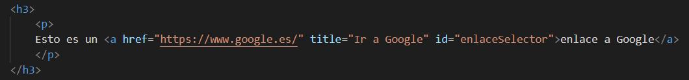
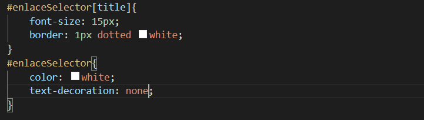
Como vemos su expresión es sencilla, colocamos en CSS el elemento, id o clase y entre corchetes el atributo al que queramos darle estilo.